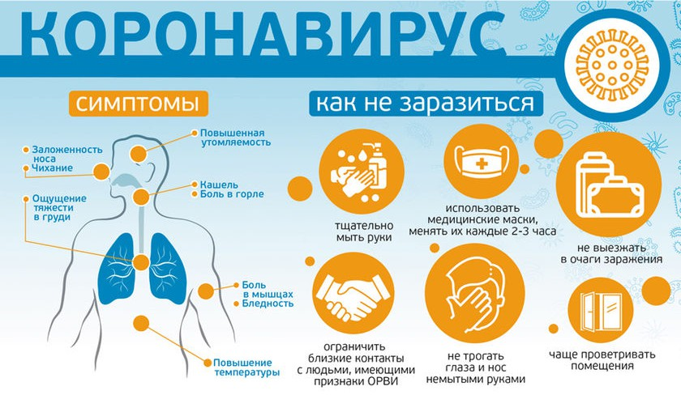
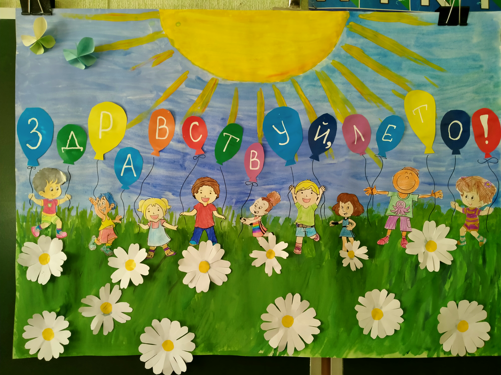

По традиции в первый летний день на территории БГО открываются лагеря с дневным пребыванием детей. Наша школа не стала исключением и 1 июня 2021 года на базе МБОУ БГО ООШ №9 открылся лагерь на 90 воспитанников в возрасте от 7 до 14 лет. В этом году продолжаются соблюдение строгих мер по предотвращению COVID-19:
ежедневное проведение «утреннего фильтра» с обязательной термометрией с использованием бесконтактных термометров среди детей с признаками респираторных заболеваний и повышенной температурой;
дезинсекция воздушной среды с использованием приборов для обеззараживания воздуха;
обработка рук детьми антисептическим средством;
обеспечение в отсутствие детей сквозного проветривания помещений;
соблюдение питьевого режима с использованием одноразовой посудой;
проведение ежедневной уборки помещений с применением дезинфицирующих средств эффективных в отношении вирусов (текущая дезинфекция).

Работа лагеря в этом году реализуется по 2 направлениям: экологическое и социальное. В лагере работают 16 высококвалифицированных педагогов. Сформировано 4 отряда: 1 отряд - 25 воспитанников в возрасте от 7 до 8 лет, 2 отряд - 25 ребёнка в возрасте от 9 до 10 лет, 3 отряд - 25 человек в возрасте от 11 до 12 лет, 4 отряд - 15 подростков в возрасте 12 - 13 лет.
В первый день лагерной смены ребята познакомились с воспитателями, ознакомились с инструкциями по ТБ и ПБ, а также правилами поведения в лагере. Ребята стали активными участниками не только творческого конкурса "Здравствуй, лето!", посвящённого Международному Дню защиты детей,
но и участниками викторин. После мероприятий всех ребят ждал сладкий приз - шоколадный батончик.
Медицинским работником были произведены антропологические измерения воспитанников на начало лагерной смены. И конечно же день продолжился активными играми на свежем воздухе.
